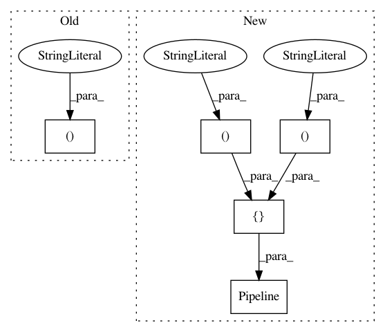

1b0d3a48e8bd7798576f8ae549586fe2d422151b,tests/flows/test_flow.py,TestFlow,test_sklearn_to_upload_to_flow,#TestFlow#Any#,134
Before Change
scaler = sklearn.preprocessing.StandardScaler(with_mean=False)
boosting = sklearn.ensemble.AdaBoostClassifier(
base_estimator=sklearn.tree.DecisionTreeClassifier())
model = sklearn.pipeline.Pipeline(steps=(
("scaler", scaler), ("boosting", boosting)))
parameter_grid = {"boosting__n_estimators": [1, 5, 10, 100],
"boosting__learning_rate": scipy.stats.uniform(0.01, 0.99),
"boosting__base_estimator__max_depth": scipy.stats.randint(1, 10)}
After Change
fs = sklearn.feature_selection.SelectPercentile(
score_func=sklearn.feature_selection.f_classif, percentile=30)
fu = sklearn.pipeline.FeatureUnion(transformer_list=[
("pca", pca), ("fs", fs)])
boosting = sklearn.ensemble.AdaBoostClassifier(
base_estimator=sklearn.tree.DecisionTreeClassifier())
model = sklearn.pipeline.Pipeline(steps=[("ohe", ohe), ("scaler", scaler),
("fu", fu), ("boosting", boosting)])
parameter_grid = {"boosting__n_estimators": [1, 5, 10, 100],
"boosting__learning_rate": scipy.stats.uniform(0.01, 0.99),
"boosting__base_estimator__max_depth": scipy.stats.randint(1, 10)}
cv = sklearn.model_selection.StratifiedKFold(n_splits=5, shuffle=True)
In pattern: SUPERPATTERN
Frequency: 3
Non-data size: 5
Instances
Project Name: openml/openml-python
Commit Name: 1b0d3a48e8bd7798576f8ae549586fe2d422151b
Time: 2016-10-05
Author: feurerm@informatik.uni-freiburg.de
File Name: tests/flows/test_flow.py
Class Name: TestFlow
Method Name: test_sklearn_to_upload_to_flow
Project Name: scikit-learn-contrib/sklearn-pandas
Commit Name: 92e4bca871dc7a0c54b3e9a391b15cd910703bcf
Time: 2015-05-30
Author: cal@calpaterson.com
File Name: tests/test_dataframe_mapper.py
Class Name:
Method Name: test_with_iris_dataframe
Project Name: kwgoodman/numerox
Commit Name: 7fb891cde617bf12e960ecfc0aac16e25775e9fb
Time: 2019-07-10
Author: michaelo@alleninstitute.org
File Name: numerox/model.py
Class Name: logistic
Method Name: fit_predict